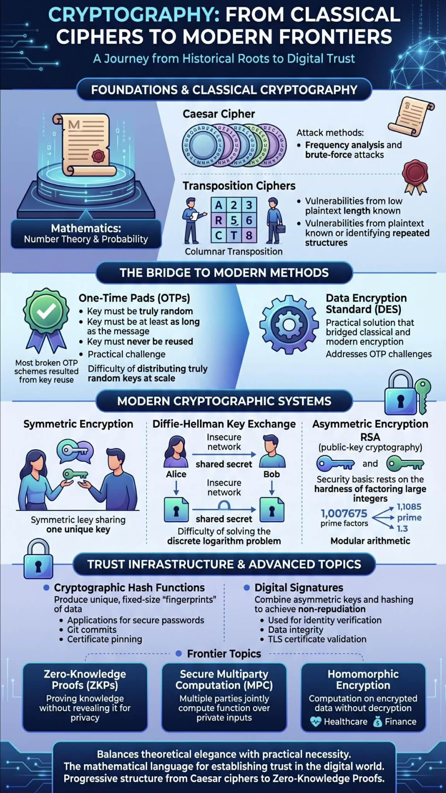

Day 4 turned out to be a genuinely engaging session — the energy in the room was great and the enthusiasm for the material came through clearly. Cryptography is one of those subjects where my conviction has always been that mathematics is the foundation of everything, and this session confirmed it in the most satisfying way possible. Seeing number theory and probability woven into the systems that protect real-world communications is precisely what makes this field so fascinating. Here is everything we covered, with some thoughts on what hit hardest.
Where Theory Meets Practice in Modern Security
Today's session on cryptography fundamentals was an excellent blend of theoretical foundations and hands-on application. The curriculum covered a comprehensive range of topics that provided both historical context and modern applications of cryptographic principles.
Classical Cryptography — Where It All Started
We began with classic cryptography, exploring cryptosystems through Caesar ciphers and learning practical attack methods against these historical encryption techniques. The mathematical representations of these systems provided a solid foundation for understanding more complex algorithms.
There is something satisfying about starting here — not just because the Caesar cipher is elegant in its simplicity, but because understanding how it breaks is what makes everything that comes next make sense. Watching frequency analysis and brute-force dismantle something that once seemed secure is a surprisingly powerful way to build intuition for what comes next.
Transposition Ciphers — Rearranging the Message
The transposition cipher section was particularly engaging, especially the columnar transposition exercises. Working through both implementation and attack vectors gave valuable insight into the vulnerabilities of classical cryptographic methods. Understanding how these systems can be compromised is crucial for appreciating why modern cryptography evolved as it did.
I found the columnar transposition exercises genuinely fun — there is a puzzle quality to them that played to my problem-solving instincts. But the more interesting realisation was how quickly they fall apart once an attacker knows the plaintext length or can identify repeated structures. Classical ciphers feel almost fragile once you understand the tools against them.
The Bridge to Modern Cryptography — OTPs and DES

The transition to modern cryptography introduced proof of security concepts and the elegant simplicity of one-time pads. We then explored the Data Encryption Standard (DES), which bridged the gap between classical and modern encryption methods.
One-time pads fascinated me. Theoretically unbreakable — if, and only if, the key is truly random, at least as long as the message, and never reused. That last condition is everything. The history of broken OTP schemes is basically a history of people reusing keys and paying the price for it. DES arriving from there made sense: it was the practical answer to the impossibility of distributing truly random key material at scale.
Symmetric Encryption and Diffie-Hellman
The symmetric encryption module covered essential concepts before diving into the Diffie-Hellman key exchange — a foundational protocol that enables secure key establishment over insecure channels.
Diffie-Hellman was one of those moments where I genuinely had to pause and appreciate what I was looking at. The idea that two parties can establish a shared secret over a completely public channel — with an eavesdropper watching every message — feels like it should be impossible. The discrete logarithm problem is doing all the heavy lifting, and seeing the maths walk through it step by step made the concept click in a way no description ever had before.
Asymmetric Encryption and RSA
This naturally led to asymmetric encryption and an in-depth look at RSA, one of the most widely-used public key cryptosystems. Understanding the central principles of modern cryptography through practical encryption and decryption exercises reinforced the theoretical concepts. The hands-on approach made complex mathematical principles more accessible and memorable.
Encrypting a message by hand with RSA — working through the modular arithmetic — demystified something I had always treated as a black box. It is still mathematically intense, but the structure is beautiful: the security of the whole thing rests on the hardness of factoring large integers. It is almost philosophical. We are betting the security of global communications on a problem nobody has managed to solve efficiently in decades.
Cryptographic Hash Functions and Digital Signatures
The session concluded with advanced topics including cryptographic hash functions, digital signatures, and practical certificate inspection. Seeing these concepts applied — inspecting real TLS certificates, verifying signatures — brought together everything from the earlier modules into a coherent picture of how trust is actually established on the internet.
Hash functions were the piece that finally made me understand why password storage works the way it does, why git commits have those long hex strings, and why certificate pinning is a thing. Digital signatures then tied it all together: asymmetric keys plus hashing equals non-repudiation. When a server presents a certificate, this entire chain — RSA, SHA, CA signatures — is running in the background in milliseconds.
The Frontier — ZKPs, MPC, and Homomorphic Encryption
We also touched on cutting-edge areas like zero-knowledge proofs, secure multiparty computation, and homomorphic encryption — topics that represent the frontier of cryptographic research and application.
Zero-knowledge proofs were the concept that genuinely kept me thinking on the commute home. The ability to prove you know something without revealing what you know — the classic "I can prove I know the password without ever sending the password" — has enormous implications for privacy-preserving systems. Homomorphic encryption, the ability to compute on encrypted data without decrypting it, sounds almost too good to be true. The fact that it is real and being actively deployed in healthcare and finance is something I want to dig into much further.
What Made This Session Stick
What made this learning experience particularly valuable was the progressive structure — each concept built logically on the previous one, creating a comprehensive understanding of how cryptographic systems protect our digital world. The interactive exercises transformed abstract mathematical concepts into tangible skills.
The field of cryptography perfectly balances theoretical elegance with practical necessity, making it both intellectually stimulating and immediately relevant to today's cybersecurity challenges.
Walking out of this session, I could finally see the full chain: classical ciphers exposed the need for rigorous security proofs; OTPs showed what perfect secrecy looks like in theory; DES and symmetric ciphers delivered practicality; Diffie-Hellman and RSA made public-key cryptography possible; hash functions and signatures built the trust infrastructure the internet runs on. That progression — from Caesar to zero-knowledge proofs — in a single day, felt remarkable. Cryptography is not just a security tool. It is the mathematical language in which trust is written.


Comments